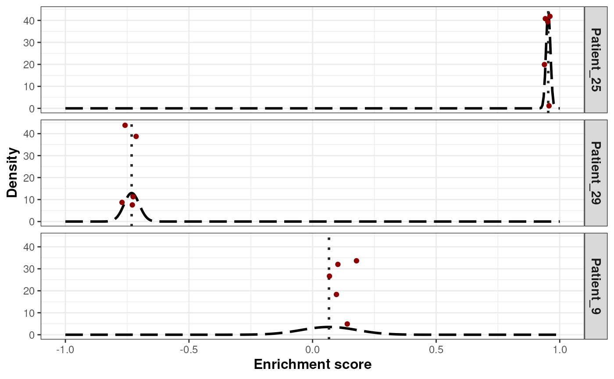

Graph the enrichment results as violin plots from the permutation step
Source:R/externalGraphFunctions.R
plotPermutationSamplesNormal.RdThis function generates a graph showing the enrichment results, as violin plots, as obtained from the permutation step, for the selected samples.
Arguments
- x
a
listof class "splitTypeResults", the output object fromrunSubtypingfunction, to be graphed.- signature
a
characterstring representing the signature that will be used to create the graph. The signature must be present in the object.- samples
a
listofcharacterstring representing the names of the samples that will be used to create the graph. The samples must be present in the object.- pointColor
a
characterstring representing the color of the dots representing the enrichment scores for the sampled values, obtained during the upscaling step, in the graph. Default:"darkred".
Value
a ggplot object that contains the density distribution of the
enrichment score (shown as dashed lines) from the normal distribution
calculated for each selected sample. The mean of the distribution is
the enrichment score for the selected sample (shown as a vertical dotted
line in the graph) while the standard deviation is obtained from the
permutation step. The enrichment scores values sampled at the upscaling
step are shown as dots in the graph.
Examples
## Loading signatures
data("signaturesDemo")
## Load demo normalized expected counts for 30 patients
data("expNormalCountsDemo")
## Fix seed for reproducibility
set.seed(1221)
## Run classification on the 30 patients using 20 permutations on 75% of
## the dataset, and 10 points per patient for the up-scaling step
results <- runSubtypingBimodal(geneLists=signaturesDemo,
expectedCountsMatrix=log2(expNormalCountsDemo + 1),
permRatio=0.75, permNbr=30, upscaleNbr=5)
## Graph the enrichment results from the permutation for 3 samples
plotPermutationSamplesNormal(x=results,
signature="Basal-like",
samples=c("Patient_9", "Patient_25", "Patient_29"))
